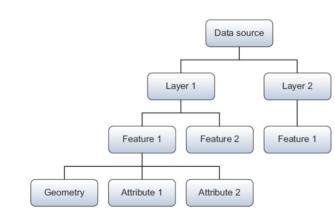
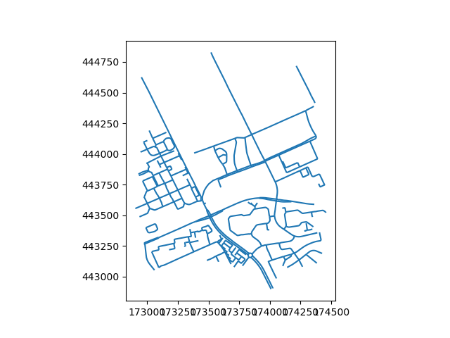
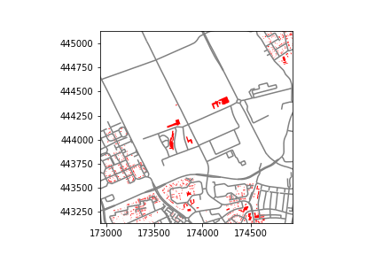
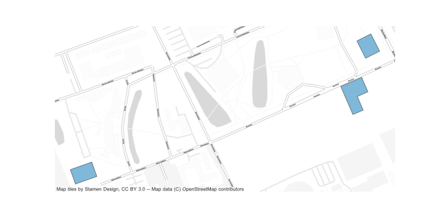
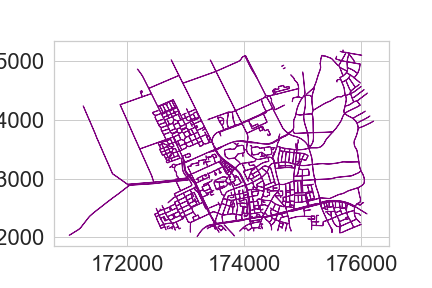
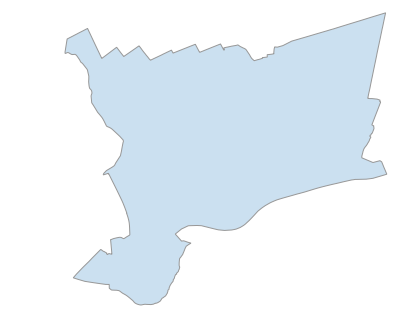
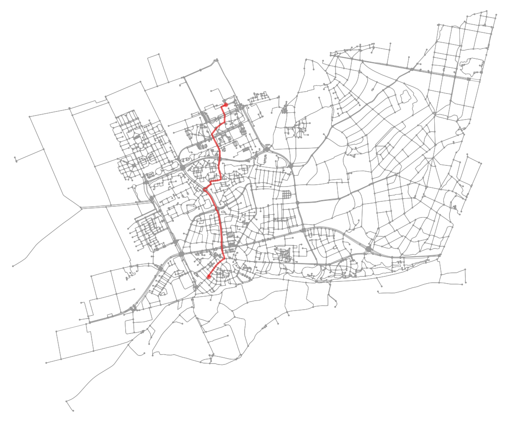

WUR Geoscripting

Week 3, Tutorial 9: Vector data handling with Python
Introduction
Today we will explore a variety of Python packages for vector data handling:
- GDAL, the backbone of spatial data processing in Python (and R) with high performance
- Shapely for geometric operations
- GeoPandas for exploratory vector data analysis, based on Pandas for dataframes and data analysis
- pyproj for re-projecting
- Fiona for geodata access and conversions
- osmnx for network analysis
Learning objectives
- Know how to create a point dataset in Python
- Be able to write spatial vector formats to disk
- Be able to read spatial vector formats from web services and files
- Know how to apply basic operations on vector data, such as buffers and shortest-path algorithms
- Be able to plot spatial vector data with Matplotlib
Setting up the Python Environment
Make a folder structure for this tutorial:
cd ~/Documents/
mkdir PythonVector #or give the directory a name to your liking
cd ./PythonVector
mkdir data
mkdir outputThe conda environment we are using today contains more
(and larger) packages than yesterday, but the process we use to create
and activat it is the same. Create a text file, (re)name it (to)
vector.yaml, and copy the following content into the
file:
name: vector
dependencies:
- python
- numpy
- matplotlib
- spyder
- gdal
- shapely
- pandas
- geopandas
- fiona
- owslib
- folium
- osmnx
- contextilyNow, create the environment with:
mamba env create --file vector.yamlActivate the environment, open Spyder, create a script in the root folder and start coding.
Vector Geometries and Python
At the backbone of spatial data processing in Python is GDAL. GDAL means Geospatial Data Abstraction Library, it is a ‘translator library’ for raster and vector geospatial data. Although the overarching package is called GDAL, the term is mostly used for the raster handling part. The vector handling part of the GDAL package is called OGR.
In this tutorial, we will not work much with OGR separately. However, it is at the basis of many other packages. Therefore, to understand object structures in these packages, it is convenient to know how various objects in OGR are related to each other: * When you open a file (e.g. shapefile), you have a DataSource object * A Data source can have one or more Layer objects * A Layer can have one or more Feature objects * Features have Geometry and Attribute objects

WKT (Well Known Text) is a markup language that describes spatial information in a clean text format. WKT can represent the following distinct (OGC-defined) vector objects:
- Geometry primitives (single entity, basic types):
- Point
- Line (formally known as a LineString)
- Polygon
- Multipart geometries, homogeneous entity collections:
- Multi-Point
- Multi-Line (MultiLineString)
- Multi-Polygon
- GeometryCollection:
- A combination of any of the above
- Other, less used objects
Geometric objects in any Python package (e.g. GDAL, shapely) are usually based on the geometries that can be represented in WKT strings. As such, it is useful to know how to write geometries in WKT; then you do not need to learn the specific way of each individual Python package. GDAL (OGR) example:
from osgeo import ogr
# Define the WKT string
wktstring = "POINT (1120351.5712494177 741921.4223245403)"
# Transform to a GDAL (OGR) object
point = ogr.CreateGeometryFromWkt(wktstring)
# Get properties
print(type(point))
print("%d,%d" % (point.GetX(), point.GetY()))A Shapely example, where we create a point from WKT or make the Point object directly:
from shapely.geometry import Point
from shapely.wkt import loads
# Create point from WKT string
wktstring = 'POINT(173994.1578792833 444133.6032947102)'
wageningen_campus = loads(wktstring)
print(type(wageningen_campus))
# Point directly
wageningen_campus = Point([173994.1578792833, 444133.60329471016])
print(type(wageningen_campus))There is an equivalent in binary format called WKB, easier for computers to process and more efficient for data transfer.
Question 1: What does WKB mean? (hint: think about WKT)
Geopandas: GeoSeries and GeoDataFrames
GeoPandas strives to make vector processing in Python easier and has
many functions available for exploratory vector data analysis. GeoPandas
is based on Pandas. Pandas has two main data structures: the
Series and the DataFrame. Correspondingly,
GeoPandas has two main data structures: the GeoSeries and
the GeoDataFrame.
A GeoSeries is a vector of features, where each feature
contains: 1) an index, and 2) a geometry. The latter is a
shapely.geometry object, and therefore inherits attributes
and methods from shapely geometries, such as area, bounds, distance,
etc. Finally, a GeoSeries can contain a coordinate
reference system (crs). GeoPandas functions, such as buffering, can be
applied to GeoSeries:
import geopandas as gpd
from shapely.wkt import loads
# Define a point
wktstring = 'POINT(173994.1578792833 444133.6032947102)'
# Convert to a GeoSeries
gs = gpd.GeoSeries([loads(wktstring)])
# Inspect the properties
print(type(gs), len(gs))
# Specify the projection
gs.crs = "EPSG:28992"
# We can now apply a function
# As an example, we add a buffer of 100 m
gs_buffer = gs.buffer(100)
# Inspect the results
print(gs.geometry)
print(gs_buffer.geometry)A GeoDataFrame is a tabular data structure with multiple
columns, where one column is a GeoSeries.
GeoDataFrames can be loaded from a file, created with data
or loaded from a Pandas DataFrame. A Pandas
DataFrame is, just like the structured NumPy array you
learned about in the previous tutorial, a dataframe equivalent of R in
Python.
A Pandas DataFrame plus a list of shapely geometries can
be converted into a GeoSeries or directly to a
GeoDataFrame.
import pandas as pd
# Create some data, with three points, a, b, and c.
data = {'name': ['a', 'b', 'c'],
'x': [173994.1578792833, 173974.1578792833, 173910.1578792833],
'y': [444135.6032947102, 444186.6032947102, 444111.6032947102]}
# Turn the data into a Pandas DataFrame (column names are extracted automatically)
df = pd.DataFrame(data)
# Inspect the DataFrame
print(df.head)
# Use the coordinates to make shapely Point geometries
geometry = [Point(xy) for xy in zip(df['x'], df['y'])]
# Pandas DataFrame and shapely Points can together become a GeoPandas GeoDataFrame
# Note that we specify the CRS (projection) directly while reading to GDF
wageningenGDF = gpd.GeoDataFrame(df, geometry=geometry, crs="EPSG:28992")
# Inspect wageningenGDF
print(type(wageningenGDF), len(wageningenGDF))Question 2: What is the difference between a GeoSeries and a GeoDataFrame?
Geopandas provides a high-level interface to the Matplotlib library
(see previous tutorial) for visualization. Vector data can simply be
mapped by using the plot() method on a
GeoSeries or GeoDataFrame. Several other
arguments to customize the plot can still be used. Note that the aspect
of the axes (see previous tutorial) is set to equal automatically when
using Geopandas plot, i.e. the horizontal and vertical scale are
automatically made the same.
from matplotlib import pyplot as plt
# Plotting a map of the GeoDataFrame directly
wageningenGDF.plot(marker='*', color='green', markersize=50)
Re-projecting
An important step in the pre-processing of geodata is to get all
datasets in a projection that suits the analysis to be performed.
GeoPandas uses PyProj in the backend to reproject the geometry of the
GeoDataFrame. Here is an example of how to reproject the
wageningenGDF GeoDataFrame we created earlier
from Dutch RD New (EPSG:28992) to WGS84 (EPSG:4326):
# Check the current crs
print(wageningenGDF.crs)
# Re-project the points to WGS84
wageningenGDF = wageningenGDF.to_crs('EPSG:4326')
# Check the crs again to see if the changes were succesful
print(wageningenGDF.crs)Writing and Reading Files
GeoPandas uses Fiona for file access, while Fiona, in its turn, builds on GDAL/OGR. Fiona has drivers for:
- Open formats such as GeoJSON and GPX
- ESRI formats such as shapefiles and OpenFileGDB
- Other formats such as MapInfo and DGN
But Fiona lacks some other popular file formats:
- Open formats such as KML or GML based on the XML format. Solution: xml.etree.ElementTree.
- Databases such as PostgreSQL. Solution: psycopg2.
- Webservices such as Web Feature Service [WFS] or Web Map Service [WMS]. Solution: OWSLib.
- Columnar formats, such as CSV or xls. Solution: Pandas can read csv or excel columns.
If none of these packages are helpful to access your files, OGR might still be able to help.
A GeoDataFrame can be written directly to a GeoJSON file
or a shapefile. GeoJSON is a
recommended format to use for geographic data in WGS84 coordinate
system since JSON dictionaries are easy to read and use on the web, and
GeoJSON is supported in popular GIS software. GeoJSON is a standard format to encode
Geographic data structures in a dictionary. We assume that you are
working in the main repository in which you have a data repository.
Write some files to a GeoJSON and shapefile:
# Save to disk
wageningenGDF.to_file(filename='data/wageningenPOI.geojson', driver='GeoJSON')
wageningenGDF.to_file(filename='data/wageningenPOI.shp', driver='ESRI Shapefile')Reading files is just as intuitive:
# Read from disk
jsonGDF = gpd.read_file('data/wageningenPOI.geojson')
shpGDF = gpd.read_file('data/wageningenPOI.shp')Reading from webservices
The web has a lot of geodata available. The OpenGeoSpatial Consortium has specified standard protocols for geo-webservices, such as Web Feature Service [WFS] and Web Map Service [WMS]. The standard web service protocols make it easy to access data. For example, the following WFS provides geodata on roads and is extracted from the Dutch national database of roads in the Netherlands:
from owslib.wfs import WebFeatureService
# Put the WFS url in a variable
wfsUrl = 'https://geodata.nationaalgeoregister.nl/nwbwegen/wfs?'
# Create a WFS object
wfs = WebFeatureService(url=wfsUrl, version='2.0.0')
# Get the title from the object
print(wfs.identification.title)
# Check the contents of the WFS
print(list(wfs.contents))Question 3: How many feature sets does this WFS contain?
WFS are used to make webmaps, which allow a quick view of the data and make geodata accessible for all. If you want to do a large analysis, it is better to download the geodata from other available repositories and not from a WFS, as it typically has limits on the number of features that can be requested, such as 100 or 1000 features. In the WFS above, they are very generous with a limit of max 15.000 features per request.
Load some roads from the WFS service for the campus area and plot them:
# Define center point and create bbox for study area
x, y = (173994.1578792833, 444133.60329471016)
xmin, xmax, ymin, ymax = x - 1000, x + 350, y - 1000, y + 350
# Get the features for the study area (using the wfs from the previous code block)
response = wfs.getfeature(typename=list(wfs.contents)[0], bbox=(xmin, ymin, xmax, ymax))
# Save them to disk
with open('data/Roads.gml', 'wb') as file:
file.write(response.read())
# Read in again with GeoPandas
roadsGDF = gpd.read_file('data/Roads.gml')
# Inspect and plot to get a quick view
print(type(roadsGDF))
roadsGDF.plot()
plt.show()
Question 4: How many roads are there in the resulting GeoDataFrame (hint: len() or .info())? Do we miss roads in the extent?
Now let’s load some buildings from another WFS service (BAG) and plot them too.
import json
# Get the WFS of the BAG
wfsUrl = 'https://service.pdok.nl/lv/bag/wfs/v2_0'
wfs = WebFeatureService(url=wfsUrl, version='2.0.0')
layer = list(wfs.contents)[0]
# Define center point and create bbox for study area
x, y = (173994.1578792833, 444133.60329471016)
xmin, xmax, ymin, ymax = x - 500, x + 500, y - 500, y + 500
# Get the features for the study area
# notice that we now get them as json, in contrast to before
response = wfs.getfeature(typename=layer, bbox=(xmin, ymin, xmax, ymax), outputFormat='json')
data = json.loads(response.read())
# Create GeoDataFrame, without saving first
buildingsGDF = gpd.GeoDataFrame.from_features(data['features'])
# Set crs to RD New
buildingsGDF.crs = 28992
# Plot roads and buildings together
roadlayer = roadsGDF.plot(color='grey')
buildingsGDF.plot(ax=roadlayer, color='red')
# Set the limits of the x and y axis
roadlayer.set_xlim(xmin, xmax)
roadlayer.set_ylim(ymin, ymax)
# Save the figure to disk
plt.savefig('./output/BuildingsAndRoads.png')
Question 5: How many buildings do you get? (hint: len()) Do you miss buildings? How can we extract missing buildings in our extent?
Selecting data
GeoDataFrames store rows and columns in a tabular format. To select specific rows, you can make use of the DataFrame functionality of Pandas. Inspect the content of your data:
# Pandas function that returns the column labels of the DataFrame
print(buildingsGDF.columns)
# Pandas function that returns the first n rows, default n = 5
print(buildingsGDF.head())
# shape area (in the units of the projection)
print(buildingsGDF.area)Columns can be selected using the name of the column. Let us take a look at the construction year (‘bouwjaar’) of the buildings.
# Inspect building year column
print(buildingsGDF['bouwjaar'])For selecting rows, GeoPandas inherits the pandas methods for
selecting data: label based indexing with loc, and integer
position based indexing with iloc, which apply to both
GeoSeries and GeoDataFrame objects. For more
information on indexing/selecting, see the pandas
documentation. In addition to these, GeoPandas provides coordinate
based indexing with the cx indexer, which slices using a
bounding box.
Let us select buildings (rows) with a larger surface area than 1000
m2 with the .loc method.
# Inspect first
print(buildingsGDF.area > 1000)
# Make the selection, select all rows with area > 1000 m2, and all columns
# Using 'label based' indexing with loc, here with a Boolean array
largeBuildingsGDF = buildingsGDF.loc[buildingsGDF.area > 1000, :]
# Plot
largeBuildingsGDF.plot()Similarly, the isin() method of Series returns a Boolean
vector that is true wherever the Series elements exist in the passed
list. This allows selecting rows where one or more columns have the
required value(s). Here we selected buildings that were under
construction (status = building phase has started (‘Bouw gestart’)).
Note that this might be outdated by the time you do this tutorial. If
you only see one building (which causes the demo to be not-so-nice), try
changing Bouw gestart to Pand in gebruik for
an overview of buildings currently in use.
# Inspect first
print(buildingsGDF['status'].isin(['Bouw gestart']))
# Make the selection, the list of required values can contain more than one item
newBuildingsGDF = buildingsGDF[buildingsGDF['status'].isin(['Bouw gestart'])]
# Plot the new buildings with a basemap for reference
# based on https://geopandas.org/gallery/plotting_basemap_background.html
import contextily as ctx
# Re-project
newBuildingsGDF = newBuildingsGDF.to_crs(epsg=3857)
# Plot with 50% transparency
ax = newBuildingsGDF.plot(figsize=(10, 10), alpha=0.5, edgecolor='k')
ctx.add_basemap(ax, source=ctx.providers.Stamen.TonerLite, zoom=17)
ax.set_axis_off()
(Figures shown here and in the next section may differ slightly from the ones you obtain.)
Geometric manipulations
GeoDataFrames and GeoSeries have several constructive methods to modify the geometry: buffer, boundary, centroid, convex hull, envelope, simplify, unary union, rotate, scale, skew and translate. When modifying the geometries in the DataFrames, it is a good practice to keep track of your geometry types and your geometry data. Have a look at the geometry types of the roads.
print(type(roadsGDF))
print(type(roadsGDF.geometry))
print(roadsGDF['geometry'])Let’s create a buffer around the roads to represent coverage of roads, assuming roads have all a width of 3 meters.
# Buffer of 1.5 m on both sides
roadsPolygonGDF = gpd.GeoDataFrame(roadsGDF, geometry=roadsGDF.buffer(distance=1.5))
# Plot
roadsPolygonGDF.plot(color='blue', edgecolor='blue')
# Check the total coverage of buffers
print(roadsPolygonGDF.area.sum())As we created buffers around many connected lines, we expect overlap
of these buffer features. Therefore, let us merge all road buffer
(polygon) features together in a unary_union and check
again for the total coverage of buffers.
# Apply unary_union
# This returns a geometry, which we convert to a GeoSeries to be able to apply GeoPandas methods again
roadsUnionGS = gpd.GeoSeries(roadsPolygonGDF.unary_union)
# Check the new total coverage of buffers and compute the overlap
print(roadsUnionGS.area)
print('There was an overlap of ' + round((roadsPolygonGDF.area.sum() - roadsUnionGS.area[0]), 1).astype(str) + ' square meters.')Question 6: What is the geometry type in RoadsUnionGS?
Question 7: What coordinate system does RoadsUnionGS have?
unary_union and
create a convex hull around the merged (multipolygon) buildings. Finally
we clip the roads with this single polygon.
# Re-project
newBuildingsGDF = newBuildingsGDF.to_crs(epsg=28992)
# Buffer, returns geometry, convert to GeoSeries
areaOfInterestGS = gpd.GeoSeries(newBuildingsGDF.buffer(distance=100).unary_union)
# Convex hull, returns a GeoSeries of geometries, convert to GeoDataFrame
areaOfInterestGDF = gpd.GeoDataFrame(areaOfInterestGS.convex_hull)
# Adapt metadata
areaOfInterestGDF = areaOfInterestGDF.rename(columns={0:'geometry'}).set_geometry('geometry')
areaOfInterestGDF.crs = 'EPSG:28992'
# Perform an intersection overlay
roadsIntersectionGDF = gpd.overlay(areaOfInterestGDF, roadsPolygonGDF, how="intersection")
# Plot the results
roadlayer = roadsIntersectionGDF.plot(color='grey', edgecolor='grey')
roadlayer.set_xlim(xmin, xmax)
roadlayer.set_ylim(ymin, ymax)
newBuildingsGDF.plot(ax=roadlayer, color='red')
In summary, the advantage of GeoPandas is that it allows both geometric and dataframe manipulations/selections. As a result, GeoPandas can for example select the roads within a set bounding box and within (and maintained by) Wageningen Municipality.
# Put the WFS url in a variable
wfsUrl = 'https://geodata.nationaalgeoregister.nl/nwbwegen/wfs?'
# Create a WFS object
wfs = WebFeatureService(url=wfsUrl, version='2.0.0')
# Let's create a bit bigger bounding box for this example than last time
x, y = (173994.1578792833, 444133.60329471016)
xmin, xmax, ymin, ymax = x - 3000, x + 3000, y - 3000, y + 3000
# Get the features for the study area
response = wfs.getfeature(typename=list(wfs.contents)[0], bbox=(xmin, ymin, xmax, ymax))
roadsGDF = gpd.read_file(response)
# Select the roads within Wageningen municipality
wageningenRoadsGDF = roadsGDF.loc[roadsGDF['gme_naam'] == 'Wageningen']
# Plot
wageningenRoadsGDF.plot(edgecolor='purple')
Network analysis
OSMnx retrieves, constructs, analyzes and visualizes street networks from OpenStreetMap. In short, a network analysis is investigating structures of relations between entities with the use of networks and graph theory. In spatial data, such entities are typically animals or people, and the relations between them, for example social networks. But relations can also be between multiple points in time for the same person, e.g. movement processes like walking, cycling, and driving.
The following script downloads the street network of Wageningen from Open Street Map as a graph, plots it, and saves it.
import osmnx as ox
# Using a geocoder to get the extent
city = ox.geocoder.geocode_to_gdf('Wageningen, Netherlands')
ox.plot.plot_footprints(ox.project_gdf(city))
# Get bike network and create graph
wageningenRoadsGraph = ox.graph.graph_from_place('Wageningen, Netherlands', network_type='bike')
# Plot and save
ox.plot.plot_graph(wageningenRoadsGraph, figsize=(10, 10), node_size=2)
ox.io.save_graph_shapefile(G=wageningenRoadsGraph, filepath='data/OSMnetwork_Wageningen.shp')
# Metadata
gdf_nodes, gdf_edges = ox.graph_to_gdfs(G=wageningenRoadsGraph)
print(gdf_nodes.info())
print(gdf_edges.info())
OSMnx can store the downloaded street network (the Graph) as a
shapefile or as a GeoDataFrame. Furthermore, the main
purpose of the module is to perform network analyses, such as a shortest
path from source to target location. Let us calculate the shortest path
from Wageningen campus to Wageningen city center. Is this the route you
would take?
# Origin
source = ox.distance.nearest_nodes(wageningenRoadsGraph, 5.665779, 51.987817)
# Destination
target = ox.distance.nearest_nodes(wageningenRoadsGraph, 5.662409, 51.964870)
# Compute shortest path
shortestroute = ox.distance.shortest_path(G=wageningenRoadsGraph,
orig=source,
dest=target,
weight='length')
# Plot
ox.plot.plot_graph_route(wageningenRoadsGraph, shortestroute, figsize=(20, 20),
route_alpha=.6, route_color='darkred', bgcolor='#FFFFFF',
node_color='#AAAAAA', edge_color='#AAAAAA',
route_linewidth=10, orig_dest_size=100)
Interactive visualization
There are multiple options to visualize your geodata: GIS software (QGIS), web maps (leaflet/Folium) and images (Matplotlib). We have already explored some of them previously during the tutorials, but here we will take a closer look at creating interactive web maps using Folium.
Folium uses leaflet on the backend to make web maps, easily
visualized on a webpage. Leaflet is
an open-source JavaScript library for mobile-friendly interactive maps.
Folium handles GeoDataFrames or JSON files as input for the interactive
map. The Python script below makes a .html file in your
working directory, which you can open in a web
browser:
import folium
# Initialize the map
campusMap = folium.Map([51.98527485, 5.66370505205543], zoom_start=17)
# Re-project
buildingsGDF = buildingsGDF.to_crs(4326)
roadsPolygonGDF = roadsPolygonGDF.to_crs(4326)
# Add the buildings
folium.Choropleth(buildingsGDF, name='Building construction years',
data=buildingsGDF, columns=['identificatie', 'bouwjaar'],
key_on='feature.properties.identificatie', fill_color='RdYlGn',
fill_opacity=0.7, line_opacity=0.2,
legend_name='Construction year').add_to(campusMap)
# Add the roads
folium.GeoJson(roadsPolygonGDF).add_to(campusMap)
# Add layer control
folium.LayerControl().add_to(campusMap)
# Save (you can now open the generated .html file from the output directory)
campusMap.save('output/campusMap.html')